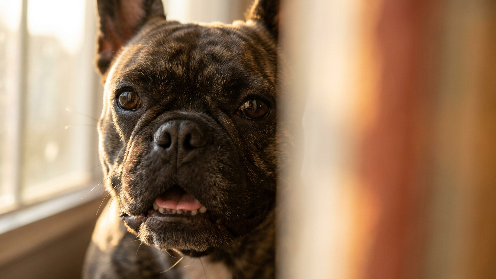

Температура воздуха +28 °C — и французский бульдог уже дышит с заметным усилием, хотя только что просто лежал. Это не совпадение: у французов короткая морда и сжатые дыхательные пути, поэтому они физически не могут охлаждаться так же эффективно, как другие собаки. Ниже — почему так устроена эта порода, на какие сигналы обращать внимание летом и как правильно организовать быт, чтобы жара не стала проблемой.
🐾 Спросите AI-ветеринара прямо сейчас
AnimaLife — приложение, где AI-ветеринар отвечает на вопросы о кошке или собаке 24/7. Бесплатно, без записи и очередей.
Французский бульдог — брахицефальная порода: у него укороченная лицевая часть черепа и, как следствие, более узкие ноздри, мягкое нёбо и трахея. Всё это ограничивает воздушный поток. Собаки охлаждаются через дыхание: пары влаги уходят с выдохом, унося тепло. У французского бульдога этот механизм работает хуже — воздух проходит медленнее, испарение меньше, температура тела растёт быстрее.
Дополнительный фактор — избыточный вес. Любой лишний килограмм у французского бульдога усиливает нагрузку на дыхательную систему. В жару это ощущается особенно остро.
Французский бульдог в норме дышит чуть громче других пород — это особенность строения. Но есть сигналы, которые выходят за рамки нормы:
Любой из этих сигналов у французского бульдога летом — повод не наблюдать, а немедленно везти к ветеринару.
Прогулки. Выходите до 9 утра или после 20 вечера, когда асфальт остыл. Французский бульдог быстро перегревается при активном движении — сокращайте время прогулки в жаркие дни, даже если собака сама рвётся бежать.
Прохлада дома. Прохладный пол — лучший друг французского бульдога летом. Обеспечьте доступ к плиточному или каменному полу. Вентилятор или кондиционер работают, но не направляйте поток воздуха прямо на собаку — нужна комфортная температура в комнате, а не сквозняк.
Вода. Миска с водой должна быть всегда полной и стоять в прохладном месте, не на солнце. Французский бульдог пьёт чаще при жаре — это нормально и нужно поощрять.
Машина и открытые площадки. Салон автомобиля на солнце нагревается до 50–60 °C за 10 минут. Французского бульдога нельзя оставлять в машине даже на «пять минут» и даже с приоткрытым окном. На прогулке избегайте участков без тени.
Нагрузка и вес. Активные игры лучше перенести на вечер. Обсудите с ветеринаром оптимальный вес для вашего французского бульдога — у брахицефальных пород контроль веса напрямую влияет на качество дыхания.
Французский бульдог не всегда показывает, что ему плохо. Если вы видите учащённое тяжёлое дыхание, которое не проходит после перемещения в прохладу и отдыха 10–15 минут, — это повод обратиться к ветеринару в тот же день. Не ждите «само пройдёт».
Раз в год — плановый осмотр у ветеринара с акцентом на дыхательную систему. Брахицефальные породы, включая французского бульдога, требуют периодической оценки состояния дыхательных путей, особенно если собака стала хрипеть или тяжело дышать чаще обычного.
Материал носит информационный характер и не заменяет очную консультацию ветеринара.
🐾 Дневник здоровья питомца — в кармане
Вес, прививки, симптомы и напоминания в одном приложении. AnimaLife следит за здоровьем питомца вместо вас.
🐾 Понравился разбор?
Подпишитесь на канал — каждый день разбираем по одному тревожному симптому у кошек и собак: что в пределах нормы, а когда пора к врачу. Подпишитесь, чтобы не пропустить разбор, который может спасти здоровье вашего питомца.